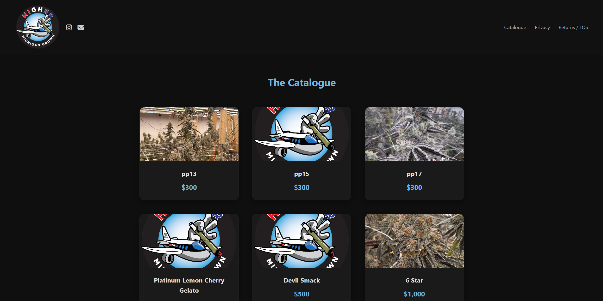
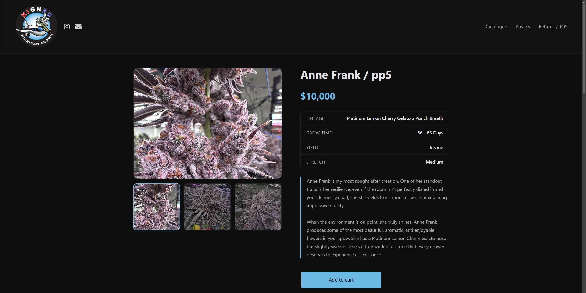
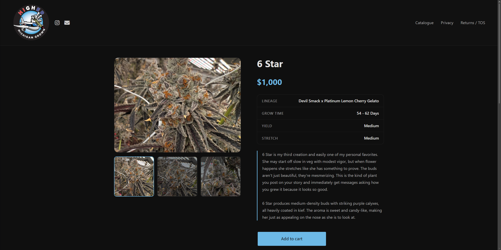

Chrome Extension
Calendar Extension
A lightweight popup calendar that lets users add and delete notes for any day. Notes persist with local storage, and dates containing notes are visually marked.
Portfolio
From client websites to browser extensions and game mods, these are some of the projects I've worked on.
Projects



An online shopping website created for a local cannabis genetics brand to showcase plant varieties, product information, brand details, and contact information.
A lightweight popup calendar that lets users add and delete notes for any day. Notes persist with local storage, and dates containing notes are visually marked.
A task-management extension with notes and subnotes. Users can add, edit, organize, and prioritize tasks while keeping data persistent in local storage.